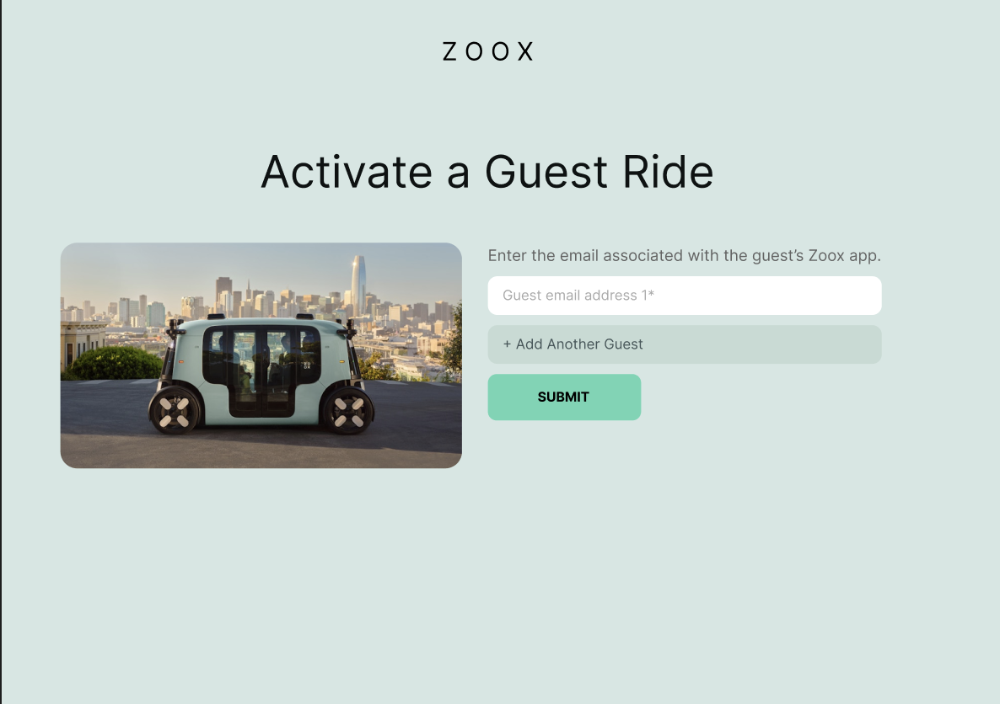
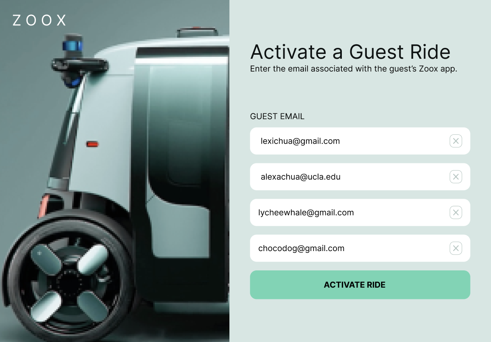
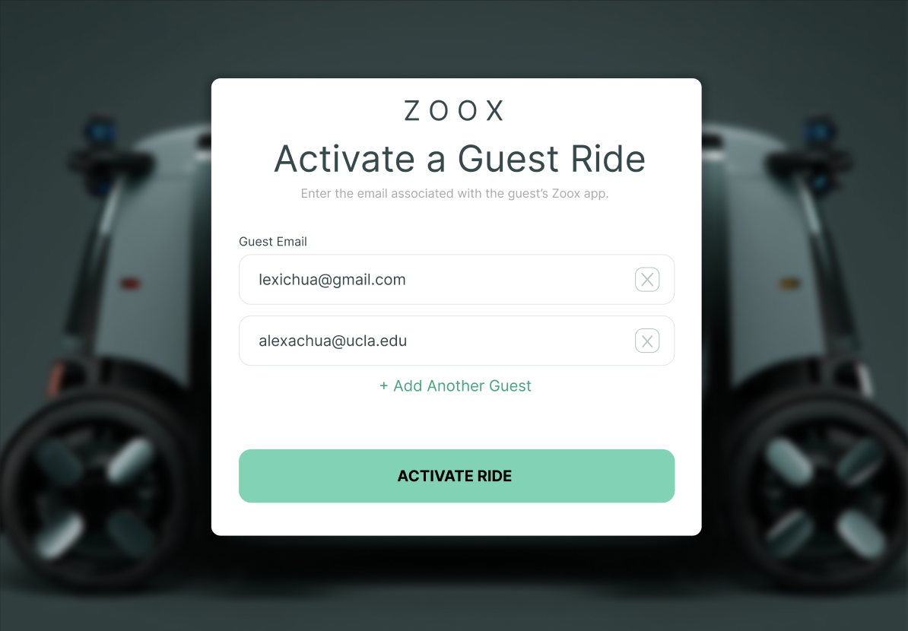
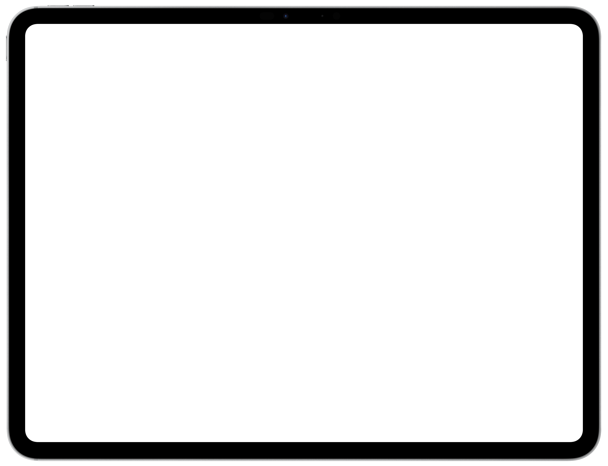

ZOOX
Interface concepts I designed for Zoox, the fully autonomous, all-electric robotaxi company which is paving the future of transportation.
Overview
While visiting the Zoox Rider Lounge this summer, I had the opportunity to talk with the team about the complexities of their waitlist system. Inspired by that conversation and the real world constraints they mentioned, I proactively designed a two-screen onboarding flow to streamline how riders are transitioned off the waitlist.
The Zoox Rider Waitlist
Moving from “on the waitlist” to “ready to ride” is a big moment for a new Zoox rider, and it should feel just as premium as the vehicle itself. For Rider Lounge staff, that means the process has to be both quick and accurate. This led me to ask: how would I design an interface to give staff a fast, low-error way to move riders off the waitlist?
Initial Prototype
I first designed a simple screen that takes in guest emails to pull them off of the waitlist.

Refining my interface
I then iterated on my first concept. I added a full-height image that puts the vehicle front and center while giving the form its own separate space. I added a persistent “Guest Email” label so the context never disappears while typing, larger fields for easier tapping, and a remove button on each entry so guests can be managed easily. I also replaced the generic “Submit” with “Activate Ride,” so the button says exactly what will happen.

Final Iterations
In my final iteration, I shifted to a modal form. Placing the form in a single card over a full-bleed hero image keeps the vehicle present while focusing attention to the task. I moved the logo into the card to unify branding with the form, making it feel official, simplified the visual weight of the fields, and brought back “Add Another Guest” as a text link so the flow can easily accommodate more guests. The final result is a calm, focused experience.

Designed for Tablet
Lounge staff greet guests face to face, so I designed this flow for a tablet they can carry with them. Unlike a desktop dashboard behind a desk, a handheld device keeps the interaction open and conversational. Guests can see exactly what is being entered and take part in the experience themselves, which builds trust through transparency.

Results and Reflection
This project has been a fun challenge to practice designing within real-world constraints, and it’s changed how I approach my work. It made me think about how small decisions can impact how a customer feels about a product as a whole, not just whether it functions. That lens on trust and perception is something I’ll carry into every future project!